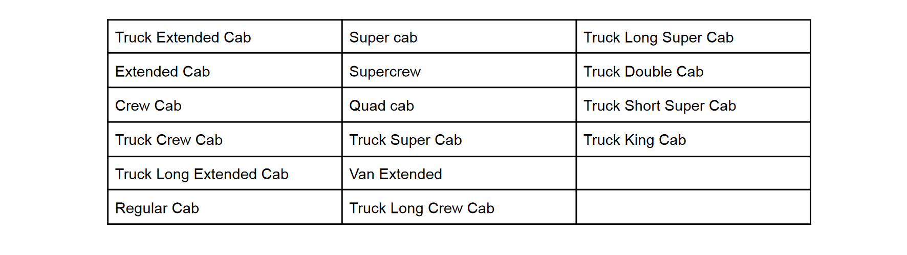
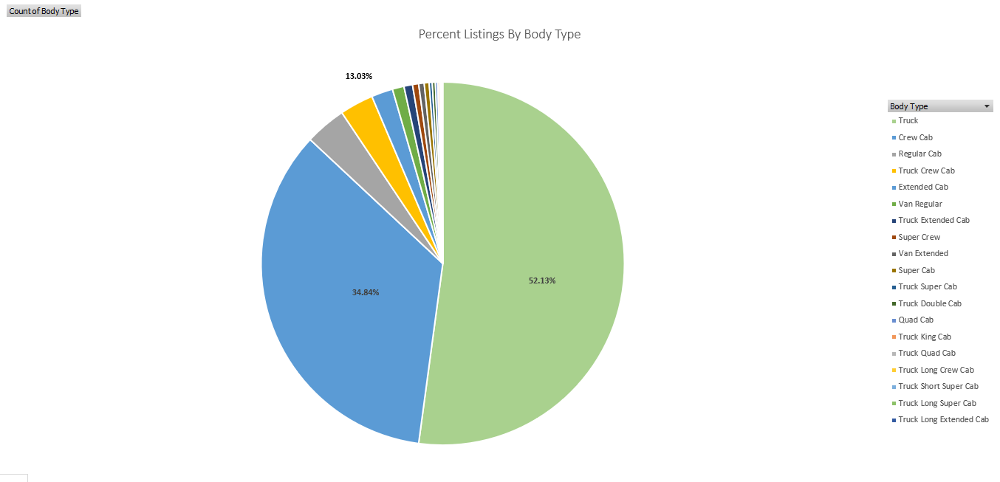
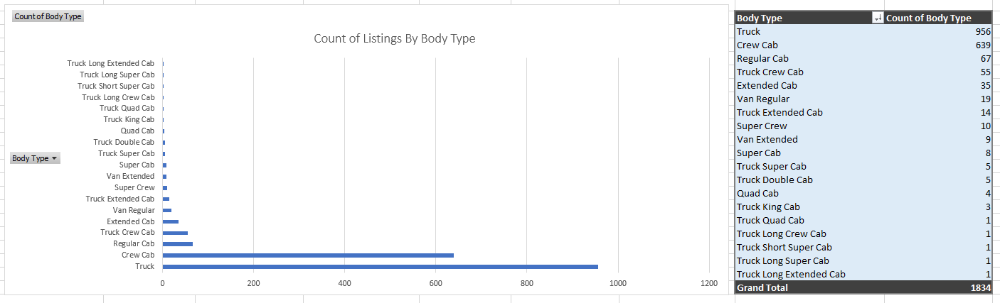

Cleaning & Analysis
A Case Study on 24,199 Used Vehicles For Sale Within 25 km Proximity of Downtown Toronto.
Dataset Obtained From Kaggle.
Skills Used: Excel Cleaning, Pivot Charts, Nested Select Queries
Objects of Interest: Market Share, Gas Usage, Average Price, and Purchasing Power
from the perspective of an interested roofing company
Here is the inital .csv, but where do we begin?  Well, roofing companies want lots of space. So a good start is to clean and analyze our data for larger vehicles.
That being said, how do we even define larger vehicles?
We combine the COUNTIF() function with the “Unique Records Only” segment of the
Advanced Filter to arrive at a total of 31 unique body types. Since the number of unique body types is relatively small,
we can manually research them and arrive at a list of body types meeting our client’s necessities. We define this set as the larger vehicles.
Well, roofing companies want lots of space. So a good start is to clean and analyze our data for larger vehicles.
That being said, how do we even define larger vehicles?
We combine the COUNTIF() function with the “Unique Records Only” segment of the
Advanced Filter to arrive at a total of 31 unique body types. Since the number of unique body types is relatively small,
we can manually research them and arrive at a list of body types meeting our client’s necessities. We define this set as the larger vehicles. 
Since we want to focus only on these defined larger vehicles, let's create a subset of the inital data with which
we can then clean and begin to analyze...
1. CTRL F and CTRL - to delete all the rows which hold body types
that aren't part of our larger vehicles set.
2. Remove the columns of "Passengers" and "Doors" since they aren't very relevant to our interests.
3. Remove any rows with NULL "Kilometers" or "Price" since they are crucial pieces of information.
4. Gas and Gasoline are the same thing; CTRL H to replace all the "Gasoline" with "Gas"
5. Removed duplicates within the remaining columns
6. Removed blank spaces through TRIM()
7. Used Find & Replace, SUBSTIUTE(), and "Text to Columns" to convert the columns representing gas usage in the city and on the highway into
a single digit numerical data type with which we can analyze (the previous format was not analytics friendly)
With the subset data somewhat cleaned, we then some pivot charts created in hopes of gaining some understanding regarding the
market share of our defined class of larger vehicles.


Right away, we see that there are two leading body types which dominate the market: "Truck" and "Crew Cab" with a staggering 52.13% and 34.84%, respectively. Another way to see this disparity, group together all the larger vehicles outside of the top 2 and they together only make up 13.03% of the listings.
Furthermore, even if we strip away percentages from the question, we see that "Truck" stands at the top with exactly 956 listings, still relatively far ahead of "Crew Cabs" following behind with 639; yet the third highest body type, "Regular Cab", is practically a rare sighting with a listing total of 67.
It is worth noting that not only does this analysis give us valuable insight into the current market of what we consider used larger vehicles, but also that any body type class not named "Truck" or "Crew Cab" is not worth analyzing independently in this case study simply due to the low number of data regarding them.